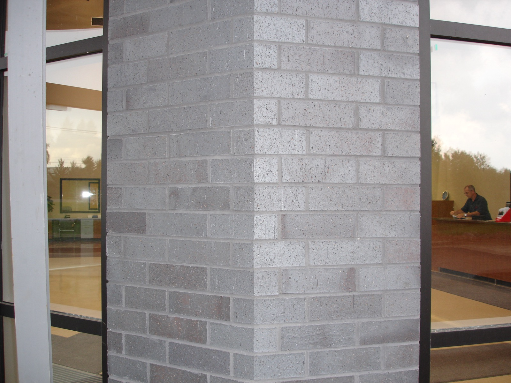
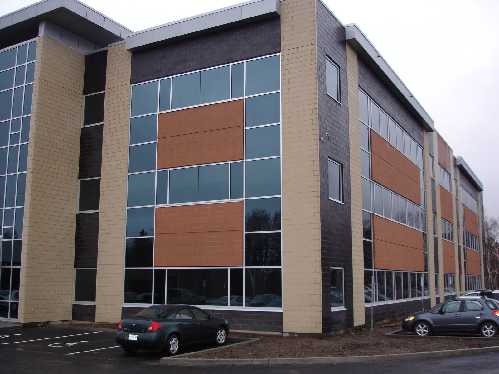
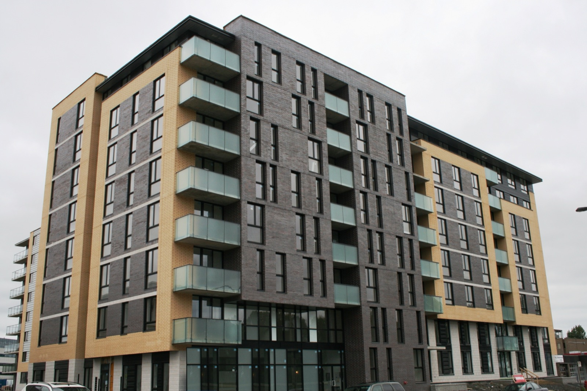

Accueil — L'entreprise
L'entreprise
Une histoire familiale au service de l'architecture depuis plus de six décennies.
Une histoire familiale au service de l'architecture depuis plus de six décennies.
Ruel et Frère est une entreprise familiale, fondée en 1962 par Raymond Ruel, son épouse et son frère Jean-Marc.
La deuxième génération, représentée par Dominic et Nathalie Ruel, a repris le flambeau depuis 2004 et perpétue la même vision : représenter des manufacturiers qui surpassent les normes de l'industrie.
Le territoire desservi par Ruel et Frère couvre l'ensemble de la province de Québec ainsi que les provinces Maritimes.

La brique d'argile et la pierre naturelle ont toujours été le centre de nos activités, auxquelles s'ajoutent désormais des matériaux européens comme le terra cotta allemand Moeding.
Des produits de haute qualité, distincts de ceux de nos compétiteurs, choisis avec exigence.
Nous représentons des fabricants qui surpassent les normes de l'industrie et innovent constamment.
Une grande collaboration développée au fil des années nous garde à l'affût des besoins du milieu.

Ruel et Frère s'implique socialement dans plusieurs causes qui lui tiennent à cœur, parmi lesquelles :

Nos conseillers vous accompagnent dans le choix des matériaux qui donneront vie à votre vision.
Nous joindre →